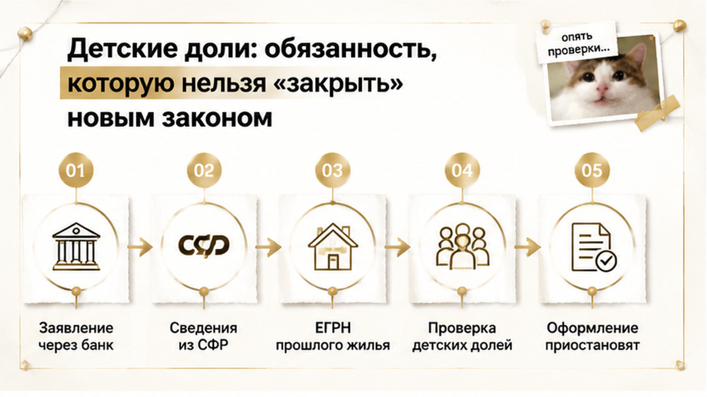
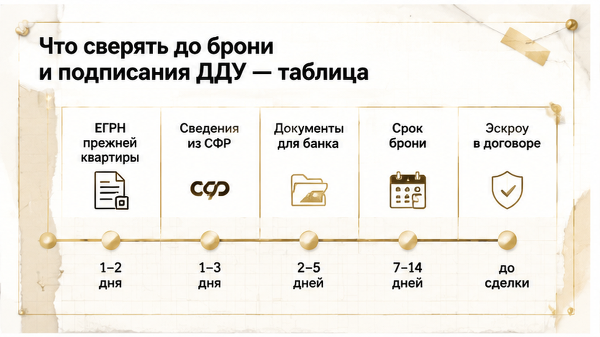

В понедельник — одобрение по семейной ипотеке. В четверг — снятая бронь и счёт эскроу, который так и не открыли.
Ни отказа банка, ни просрочки, ни ссоры с застройщиком: на финальной проверке всплыло, что по прежней квартире, купленной с маткапиталом, доли детям не выделены. Банк не отказал — он приостановил оформление до устранения риска, а до дедлайна брони оставалось около двух суток. Продлить не успели: лот вернулся в продажу, ДДУ не подписали, эскроу не открыли — и это, как ни странно, единственная хорошая новость, потому что деньги никуда не ушли. Случай собирательный, без фамилий, адреса ЖК и названия банка, но механика в Тюмени повторяется из месяца в месяц.
Меня зовут Святослав Шакин, The Риэлтор, Тюмень. Расскажу изнутри, как такие сделки рвутся не на цифрах, а на документах. Выбираете новостройку у застройщика — напишите до брони, а не после: Telegram или MAX.
Со стороны всё выглядело идеально.
Семейная ипотека ДОМ.РФ: ставка до 6%, первоначальный взнос от 20%, лимит кредита для регионов вне Москвы, Петербурга и их областей — до 6 млн рублей. Квартира у застройщика по ДДУ, супруги — созаёмщики.
Взнос собрали из своих денег и материнского капитала. Это разрешено: маткапитал направляют на первоначальный взнос и на досрочное погашение, а вот на ежемесячные платежи — нельзя. Ждать трёх лет ребёнку тоже не нужно: на взнос по ипотеке сертификатом распоряжаются сразу. Заявление при этом подаётся не «куда-то в СФР», а через банк, который оформляет кредит, — запомните эту деталь, дальше она сработает.
Дальше семья пошла по маршруту, который в Тюмени проходит почти каждый: бронь у застройщика, предварительное одобрение, полная проверка документов, подписание и регистрация ДДУ, открытие счёта эскроу и только потом — выдача кредитных денег. Плата за бронь в эту схему не входит вообще: она уходит застройщику напрямую, на эскроу её никто не кладёт.
И вот здесь живёт иллюзия, из-за которой рвутся сделки.
«Нам одобрили — значит, нас проверили», — говорят в отделе продаж почти каждому. Не значит. Предварительное одобрение — это решение по заёмщику: доход, нагрузка, возраст детей, кредитная история, соответствие программе. Решения по сделке в этот момент нет.
Объект, застройщик, происхождение первоначального взноса, история прошлых жилищных операций — это отдельный круг проверки. И по времени он приходится ровно на срок брони, когда семья уже празднует одобрение и торопит менеджера с датой подписания.
Похожую развилку я разбирал в кейсе, где ипотеку одобрили, а регистрацию отменили из-за строки в ЕГРН. Правило то же: одобрение кредита не закрывает проблему в документах, оно просто её пока не видит. Только здесь «строка» пряталась не в новой квартире, а в старой.
Пакет ушёл на финальную проверку — и банк сделал ровно то, чего от него не ждали: посмотрел назад.
Сопоставил сведения о распоряжении маткапиталом с выпиской ЕГРН по прежней квартире. Средства на то жильё направлялись, а долей детей в реестре нет.
Формально это не приговор. Банк запросил подтверждение исполнения обязанности и приостановил оформление до устранения риска. По-человечески — пауза неизвестной длины прямо посреди срока брони.
Быстро восстановить картину не вышло. Нужны были документы по прежней квартире, сведения из СФР, соглашение о выделении долей, регистрация. Это не разговор на два дня.
А дедлайн брони в этом казусе был около 48 часов. Подчеркну: это факт конкретной истории, а не рыночная норма. На практике бесплатная бронь в Тюмени живёт один–пять дней, платная — до месяца и дольше, а сбор документов под ипотеку занимает от нескольких дней до двух недель. Продление зависит только от того, что написано в договоре бронирования: единых правил тут нет.
Продлить не дали. Бронь сняли, лот вернулся в продажу, ДДУ не подписали, счёт эскроу не открыли.
И вот факт, который стоит отделить от эмоций: одобрение заявки, выдача кредита и открытие эскроу — три разных события. Между ними банк вправе остановиться на любом шаге.
Хорошая новость в этой истории ровно одна, и она весит больше, чем кажется: деньги на эскроу не ушли, потому что счёт даже не открылся. Семья потеряла время, нервы и понравившуюся планировку — но не средства, зависшие в чужой конструкции.
Контраст виден на другом тюменском сюжете: там ключи от новостройки перенесли на год, а деньги на эскроу заморозили. Сделка была закрыта, счёт наполнен, выйти из положения — тяжело. Здесь цепочка порвалась раньше: до подписи, до эскроу, до денег. Обидно, но управляемо.

«Нам же одобрили — значит, нас проверили».
Это самая дорогая фраза в новостройках.
Предварительное одобрение отвечает ровно на один вопрос: справится ли заёмщик. Доход, нагрузка, стаж, кредитная история, возраст детей, созаёмщики. Дальше — тишина.
Сделку в этот момент не смотрел никто. Ни объект, ни источник первоначального взноса, ни ваша прошлая жилищная история. Полная проверка стартует позже — когда появились конкретный корпус, проект ДДУ и понятная схема расчётов через эскроу. То есть ровно внутри срока брони.
И на этом втором круге маткапитал перестаёт быть просто суммой в графе «взнос».
Смотрите механику изнутри. Заявление о направлении средств на первоначальный взнос подаётся через банк, который оформляет кредит. Банк здесь не сторонний наблюдатель — он участник процедуры, и отвечать за чистоту распоряжения сертификатом придётся ему. Поэтому он смотрит не только вперёд, на вашу будущую квартиру, но и назад: как маткапиталом распорядились в прошлый раз.
Что сопоставляют:
Если маткапитал на прежнюю квартиру уходил, а детских долей в ЕГРН нет — у банка появляется вопрос, на который у семьи нет готового ответа.
Дальше возможны три разных сценария, и путать их не стоит: запрос дополнительных документов, приостановка оформления до устранения риска, отказ по итогам индивидуальной проверки. Автоматического «всем откажут» не существует — каждый банк считает риск по своим внутренним правилам.
Но сама остановка — вещь абсолютно рабочая. И приходит она обычно тогда, когда семья уже мысленно расставила мебель в выбранной планировке.
Похожая развилка была в разборе, где продавец показал справку о закрытии ипотеки, а банк всё ещё держал залог. Бумага на руках и подтверждённый для банка факт — два разных состояния мира.
И отдельная арифметика 2026 года, про которую забывают. С 1 февраля работает правило «одна семья — одна льготная ипотека» с оговорками. Право на льготу перестало быть бесконечным ресурсом: перезайти в сделку «по-быстрому» может быть уже нечем. Чем ценнее это право, тем дороже стоит каждый сорванный подход.
Теперь по сути того, что банк ищет в прошлом.
256-ФЗ, часть 4 статьи 10: жильё, купленное с маткапиталом, оформляется в общую собственность владельца сертификата, супруга и всех детей — с определением долей. Это не рекомендация и не строчка для отчётности. Это условие, на котором государство дало деньги.
А дальше начинается путаница, которую я слышу почти на каждой консультации.
«Так обязательство же отменили, мы его с двадцатого года не подаём».
С 12 марта 2020 года отдельное нотариальное обязательство в фонд действительно подавать не нужно. Отменили бумагу, а не обязанность. Требование выделить доли детям осталось в законе целиком — просто его больше не подтверждают отдельным документом на входе.
Со сроками тоже не всё очевидно. Если квартиру брали в ипотеку, доли обычно выделяют в течение шести месяцев после полного погашения кредита и снятия обременения. Если речь про ДДУ — отсчёт привязан к вводу дома и оформлению права собственности.
Отсюда типовой сюжет. Ипотеку закрыли, обременение сняли, выдохнули, поехали отдыхать. Юридически обязанность именно в этот момент и стала актуальной. Фактически до нотариуса и Росреестра никто не дошёл — потому что никто не напомнил.
Второй источник ложного спокойствия — закон 195-ФЗ от 7 июля 2025 года. Он реально упростил жизнь: согласие банка-залогодержателя на выделение долей больше не требуется, в том числе при непогашенной ипотеке. Логика хорошая — раньше семьи годами упирались в позицию банка.
Только новое правило убирает препятствие на будущее, а не переписывает прошлое. Оно не отменяет саму обязанность и не лечит старое нарушение задним числом. Если по прежней квартире доли так и не выделены — значит, не выделены, и закон 2025 года это не нормализует.
Цена неисполнения вполне земная: требование вернуть средства маткапитала, судебное понуждение выделить доли, участие органов опеки. Плюс тихая проблема на будущее — такую квартиру трудно продать: покупатель и его банк увидят разрыв между историей сертификата и составом собственников в ЕГРН.
И всплывает это, как в нашей истории, часто не при продаже старого жилья. А при покупке нового — на подготовке ДДУ, когда до дедлайна брони остаются считаные часы.
Хорошая часть: история исправимая, а не приговор. Соглашение о выделении долей, регистрация в Росреестре, при необходимости — с участием опеки. Сроки регистрации в ЕГРН конечны и предсказуемы.
Вопрос вообще не в том, «можно ли». Вопрос — когда: спокойно, до брони и до денег, или под таймер, который уже включил застройщик.

Разберу по шагам то, что в этой истории выясняли уже под таймер.
Пакетов на самом деле три: прошлая квартира с маткапиталом, требования банка по семейной ипотеке и документы застройщика по новостройке.
Обычная логика: «соберём, когда попросят». Рабочая логика: собрать до брони. После подписания договора бронирования время идёт против вас, а не за вас.
| Что проверяем | Где смотрим | Что должно быть видно | Если не сходится |
|---|---|---|---|
| Прежнее жильё, купленное с маткапиталом | Выписка ЕГРН на ту квартиру | Зарегистрированные доли детей и супруга, статус обременения | Соглашение о выделении долей и регистрация; при отчуждении — участие опеки |
| История распоряжения сертификатом | Сведения СФР по маткапиталу | Куда и в какой сумме уходили средства, остаток | Запрашиваем документы заранее, а не в день подачи заявки |
| Окончательное одобрение по семейной ипотеке | Письменный список документов от банка | Отдельным пунктом — прошлый маткапитал и детские доли | Уточняем, что банк примет как подтверждение и в какой срок |
| Маткапитал в первоначальном взносе | Условия программы и порядок банка | Заявление идёт через банк, который оформляет кредит; на ежемесячные платежи маткапитал не направляется | Согласуем сроки перечисления СФР со сроком брони |
| Бронь | Договор бронирования у застройщика | Срок, платная или бесплатная, порядок продления, что будет при приостановке банком | Продление фиксируем письменно; безусловный возврат платы никто не гарантирует |
| ДДУ | Проект договора до подписания | Реквизиты счёта эскроу, сумма депонирования, срок передачи объекта | Сверяем с кредитным договором и правим до подписи, а не после регистрации |
| Порядок расчётов | Регламент банка-агента по эскроу | Регистрация ДДУ → открытие счёта → выдача кредита | Не платим за бронь под обещание «эскроу откроем потом, это формальность» |
Теперь про сроки — их путают чаще всего.
Бесплатная бронь в Тюмени живёт обычно один–пять дней, платная — до месяца и дольше. Сбор документов под ипотеку занимает от нескольких дней до двух недель.
Сорок восемь часов из этой истории — деталь конкретного сюжета, а не рыночная норма. У другого застройщика было бы иначе. Смотреть надо не на слово «бронь», а на строчку в договоре, где написан срок и порядок продления.
И то, о чём просят реже всего: письменный список документов от банка.
«Ну там стандартный пакет» — это не список.
Когда прошлый маткапитал стоит в списке отдельным пунктом, вы узнаёте о проблеме до денег. А не на подготовке ДДУ, когда бронь уже тикает.
Выбираете новостройку в Тюмени и в первоначальном взносе есть маткапитал — пришлите вводные до брони, разберём ровно по этой таблице. Телеграм: t.me/Tyumen_Rieltor, MAX: max.ru/id561413315447_biz.
Цепочка по новостройке выглядит так: бронь — предварительное одобрение — полная проверка банка — подписание и регистрация ДДУ — открытие счёта эскроу — выдача кредита и депонирование денег.
Расчёты по 214-ФЗ идут через эскроу: банк — агент, покупатель — депонент, застройщик — бенефициар. Плата за бронирование в эту конструкцию не входит, она уходит застройщику напрямую.
Рвётся всё в одном месте — между предварительным одобрением и полной проверкой.
Одобренная заявка — это ещё не выданные деньги. Выданные деньги — это ещё не открытый эскроу. Между этими точками банк вправе остановить оформление, если увидит несостыковку.
В нашем сюжете несостыковка была не в доме и не в застройщике. Она была в истории прежней квартиры: маткапитал использовали, а доли детей в ЕГРН так и не появились.
Сравните с другим тюменским разбором, где ключи от новостройки перенесли на год, а деньги на эскроу заморозили. Там покупатель был уже внутри сделки: счёт наполнен, выйти тяжело. Здесь остановка случилась раньше — до подписи и до денег.
И это принципиально другая история, чем та, где расписку написали, а денег на счёте не оказалось. Там возвращать было уже нечего.
Вопрос, на который у меня нет универсального ответа, и я правда хочу услышать ваш: маткапитал уже использовали на прошлую квартиру — бронировать новостройку в семейную ипотеку или сначала закрыть обязательства по детским долям и получить справку? Напишите в комментариях, как решали вы, особенно если банк вас уже разворачивал.
Главное по итогу этой истории: деньги на эскроу не ушли. Семья потеряла лот, неделю нервов и понравившуюся планировку — но не оказалась в положении «кредит есть, квартиры нет, документы не в порядке».
Такое ловится заранее: выписка ЕГРН, сведения СФР и письменный список банка — до брони, а не под таймер.